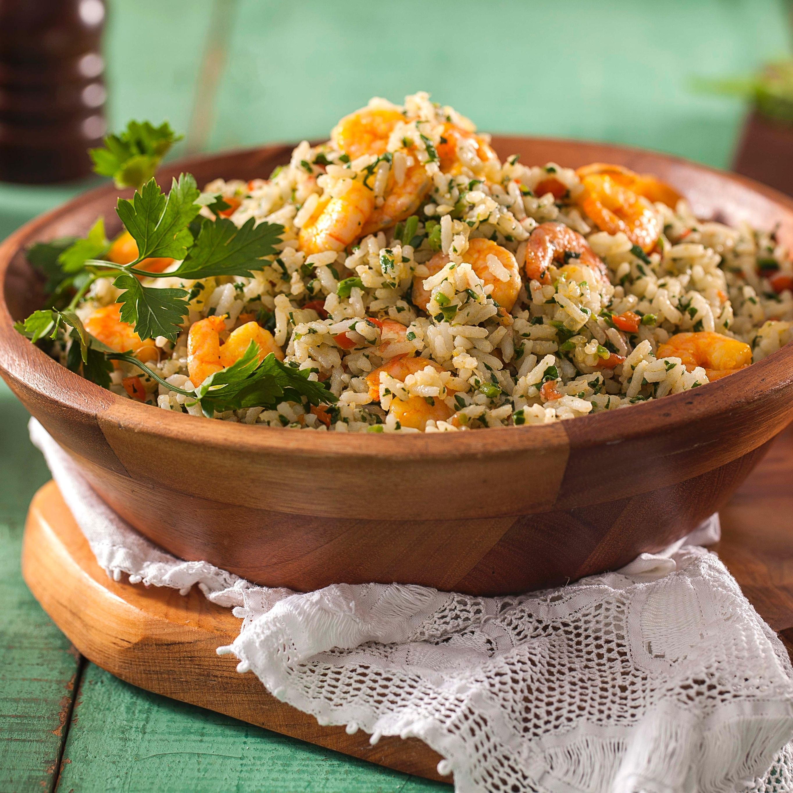

bolinho de feijão-fradinho artesanal, temperado com cebola e sal, frito em azeite de dendê e depois recheado com vatapá (leite de coco, castanha de caju, amendoim e camarão), vinagrete e camarão seco
R$ 14.99
ARROZ DE CUXÁ
 feito com vinagreira, gergelim, camarão seco, farinha de mandioca seca e pimenta-de-cheiro
R$ 27,99
CARANGUEJADA
caranguejos cozidos em molho preparado com leite de coco, azeite e temperos verdes. Para acompanhar vem arroz branco e pirão feito do caldo da própria caranguejada.
R$ 31,99
ARROZ DE LEITE
arroz cozido em leite e açúcar, podendo ser temperado com casca de limão, canela em pau, cravo, açafrão, pistáchio etc. em geral polvilhado de canela.
R$ 9,99
SIRI MOLE AO COCO
carne de siri mole, suco de limão , sal a gosto, azeite, cebola picada, tomate picado, coentro picado, pimentão picado, chá de leite de coco
R$ 40,00
PITUZADA
camarão de água doce,com farinha de mandioca, leite de coco, extrato de tomate, cebola, alho e cheiro-verde.
R$ 42,99
CALDINHOS
temos diversos sabores
R$ 6,90
TAPIOCA SALGADA
temos: frango desfiado, ovos mexidos, atum e queijo branco ou cottage.
R$ 10,50
CUZCUZ
farinha de milho, sal, água, manteiga.
R$ 8,70
CAMARÃO FRITO
camarão limpo com casca, Suco de 1 limão, alho, Sal e pimenta-do-reino a gosto, tempero para carne, farinha de trigo sem fermento, farinha de rosca.
R$ 34,90
BOLINHO DE MANDIOCA
mandioca cozida, ovo, farinha de trigo, Sal a gosto.
R$ 13,50
PRINCIPAIS
ITEM
PREÇO
SARAPATEL
Miúdos de porco: fígado, bofe, língua, goela e coração, tomates picados, pimentões picados, cebolas picadas, alho picado, pimenta-do-reino, colorau, vinagre, pimentas de cheiro.
R$ 35,99
BOBÓ DE CAMARÃO
camarão fresco, alho picado, cebolas picada, azeite, pimentão picado, sal, suco de limão, mandioca, folha de louro, leite de coco, molho de tomate, azeite dendê.
R$ 30,50
VATAPÁ
castanha de caju, azeite de dendê, camarão, coentro, pão, pimenta malagueta, coco e gengibre que serão misturados e transformados num creme.
R$ 45,50
MOQUECA MARANHANSE
camarão descascado, tomate picado, pimentão picado, cebolinha picada, creme de leite, extrato de tomates, alho picado, salsa picadas, coentro picados, leite de coco, manteiga.
carne de siri desfiada e limpa, cebola ralada, sal, tomates picados, leite de coco, alho amassados, azeite extra virgem, Cebolinha picadinha, Parmesão ralado.
R$ 30,99
SOBREMESAS
ITEM
PREÇO
MUNGUNZÁ
milho para canjica, leite, Pedaços de canela em pau, água, leite condensado.


.webp)